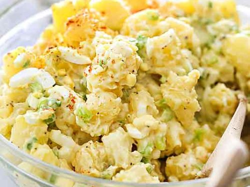
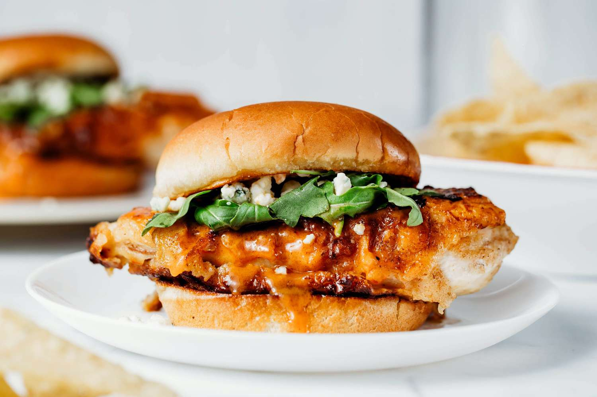

Odin Recipes
Potato Salad

Discription
There are many ways to make potato salad, but if you're looking for a traditional, mayonnaise-based potato salad made with hard-boiled eggs, celery, and a little pickle relish for zing, you've landed on the right recipe. With more than one thousand ratings and nearly a thousand reviews from our Allrecipes community of home cooks, this recipe for Old-Fashioned Potato salad is a proven winner. And it's so easy to make using everyday ingredients. I'll show you how to make Old-Fashioned Potato salad, with loads of tips all along the way. Plus, I'll share tips for storing and freezing potato salad. (Yes, you can freeze potato salad!)
Igredients
- 5 potatos
- 3 eggs
- 1 cup chopped celery
- 1/2 cup chopped onion
- 1/2 cup sweet pickle relish
- 1/4 cup mayo
- 1 tablespoon prepared mustard
- 1/4 teaspoon garlic salt
- 1/4 teaspoon celery salt
- ground black pepper to taste
Steps
- Bring a large pot of salted water to a boil. Add potatoes and cook until tender but still firm, about 15 minutes. Drain, cool, peel and chop.
- While potatoes cook, place eggs in a saucepan and cover with cold water. Bring water to a boil; cover, remove from heat, and let eggs stand in hot water for 10 to 12 minutes. Remove from hot water, cool, peel and chop.
- Combine the potatoes, eggs, celery, onion, relish, mayonnaise, mustard, garlic salt, celery salt, and pepper in a large bowl. Mix together well and refrigerate until chilled.
Baked Salmon Fillet

Discription
Learn how long to bake salmon at 400 degrees F with this easy recipe for delicious salmon fillets coated with Dijon-style mustard and seasoned bread crumbs drizzled with butter.
Ingredients
- 4 ounce fillets salmon
- 3 tablespoons perpared dijon-style mustard
- salt and ground black pepper to taste
- 1/4 cup italian-style dry bread crumbs
- 1/4 cup butter melted
Steps
- Preheat the oven to 400 degrees F (200 degrees C). Line a shallow baking pan with aluminum foil.
- Place salmon fillets skin-side down on the prepared baking pan. Spread a thin layer of mustard on top of each fillet; season with salt and pepper. Top with bread crumbs, then drizzle with melted butter.
- Bake in the preheated oven until salmon flakes easily with a fork, about 15 minutes.
Slow Cooker Buffalo Sandwiches

Discription
This crockpot Buffalo chicken is great for hearty sandwiches that will please those who love Buffalo chicken wings. This recipe is perfect for those days spent watching football. I like to top these with blue cheese or ranch dressing.
Ingredients
- 4 skinless boneless chicken breast halves
- 1 bottle buffalo wing sauce, divided
- 1/2 package dry ranch salad dressing mix
- 2 tablespoons butter
- 6 hoagie rolls split lenghtwise
Steps
- Place chicken breasts into the slow cooker; pour in 3/4 of the wing sauce and ranch dressing mix.
- Cover and cook on Low for 6 to 7 hours.
- Shred chicken in the cooker with two forks. Stir in butter.
- Pile shredded chicken and sauce onto hoagie rolls. Serve with remaining Buffalo sauce.